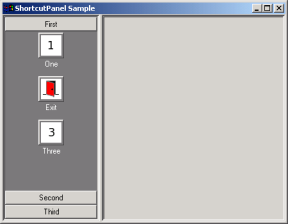

| Linux | Win32 |
|---|---|
|  |
ShortcutPanel* pShortCutBar = new ShortcutPanel(pSplitter, -1, wxDefaultPosition, wxSize(100, 400));
pSplitter->SplitVertically(pShortCutBar, pPanel, 150);
pShortCutBar->AddGroup(_("First"));
pShortCutBar->AddGroup(_("Second"));
pShortCutBar->AddGroup(_("Third"));
int FirstGroupId = pShortCutBar->FindGroup(_("First"));
int SecondGroupId = pShortCutBar->FindGroup(_("Second"));
int ThirdGroupId = pShortCutBar->FindGroup(_("Third"));
wxBitmap* pBitmapOne = new wxBitmap(one_xpm);
wxBitmap* pBitmapTwo = new wxBitmap(exit_xpm);
wxBitmap* pBitmapThree = new wxBitmap(three_xpm);
wxBitmap* pBitmapFour = new wxBitmap(four_xpm);
pShortCutBar->AddShortcut(FirstGroupId, new Shortcut(ID_CMD_ONE, wxString(_("One")), *pBitmapOne));
pShortCutBar->AddShortcut(FirstGroupId, new Shortcut(wxID_EXIT, wxString(_("Exit")), *pBitmapTwo));
pShortCutBar->AddShortcut(FirstGroupId, new Shortcut(ID_CMD_THREE, wxString(_("Three")), *pBitmapThree));
pShortCutBar->AddShortcut(SecondGroupId, new Shortcut(ID_CMD_FOUR, wxString(_("Four")), *pBitmapFour));
delete pBitmapOne;
delete pBitmapTwo;
delete pBitmapThree;
delete pBitmapFour;